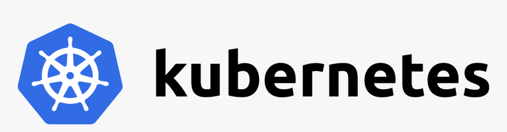

Docker is a containerization platform. Containerization brings abstraction to the operating system which means streamlining its functionality by isolating an application within a container including only the pertinent data for specific operations while hiding irrelevant data. Docker bundles together the application with its libraries and supporting services in the form of a container.
A Dockerfile includes the command-line instructions to build a Docker Image. A Docker Image is a read-only template for creating multiple Docker containers. It is beneficial to create multiple containers as it results in high availability as well as scalability
Kubernetes is a container management platform that automates the process of scaling, updating, and removing containers. Each VM or bare-metal server is considered a node in Kubernetes. A bare-metal server is a physical server dedicated to a single tenant. The Master Node has the Kubernetes engine installed and it controls the scheduling of pods across other nodes where the application runs. A pod is a group of containers that are related to each other.
Without a container building platform like Docker, the Kubernetes platform is not useful. However, Kubernetes has become so recognized in its specialized function that the Docker Desktop application includes a standalone Kubernetes server and client. Both companies have embraced their relationship and openly share ideas and best practices.Containerization is the way of the future, and both firms are blazing the trail.